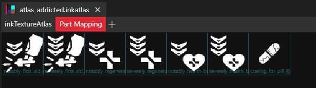
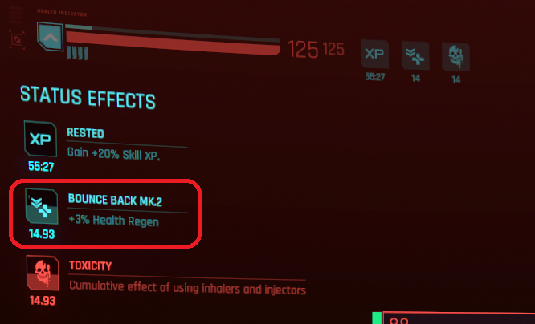

Icons
Here's a workflow for custom status effects icons which works !
- WolvenKit 8.8.1
- Illustrator 2023
- Photoshop 2023
- InkAtlas Utils 0.6.0
design in Illustrator (optional)
A good way to design in illustrator is to split each icon in a separate artboard, named after the final icon.
Each artboard can contain one or more layers for a single icon design.
- create new document
- 640x512 pixels
- 72 DPI
- create a black background for the whole icons (640x512 pixels) on a "Background" layer
- name each of the layers and their corresponding artboard after its final icon e.g. notably_first_aid_whiff
- create a black background rectangle for each icon (64x64 pixels) to use as placeholder

Once happy with your icons:
-
File > Export > Export for Screens
export them e.g. to raw\addicted\gameplay\gui\widgets\healthbar

import into Photoshop
If you chose to design on Illustrator:
-
create a new document:
- 640x512 pixels
- 72 DPI
-
create a black background layer "Background" and lock it
-
import and position each of the previously generated PNG icons to your document
-
create as many black backgrounds layers as there are icons, named after the icons
these are placeholders so that Inkatlas Utils plugin generate Part Mapping of 64x64 pixels, inside of the size of the inner icon's graphics
-
group all your icons layers together, and below all the placeholders together

export from Photoshop
⚠️ if you use a Cloud document
- File > Save as Copy > On your computer
- then do the following steps from your local copy, because sometimes cloud sync will leave your document in a wrong state after playing batch actions with the plugin
Then proceed:
- open Inkatlas Utils from Plugins panel
- Export to TGA, e.g.
100: raw\addicted\gameplay\gui\widgets\healthbar\atlas_addicted.xbm50(for 1080p): raw\addicted\gameplay\gui\widgets\healthbar\atlas_addicted_1080p.xbm
- Generate InkAtlas, e.g.
- InkAtlas filename: atlas_addicted
- XBM Depot Path: addicted\gameplay\gui\widgets\healthbar\atlas_addicted.xbm
- XBM Depot Path (1080p): addicted\gameplay\gui\widgets\healthbar\atlas_addicted_1080p.xbm
import in WolvenKit
- launch WolvenKit
-
Tools > Import Tool
-
import both .tga as follow
credits to IslandDancer on Discord

-
-
right click on raw\addicted\gameplay\gui\widgets\healthbar\atlas_addicted.inkatlas.json then Convert from JSON
-
double-check your .inkatlas to make sure everything looks as expected

-
Troubleshooting
- in Part mapping, the placeholder only fits my icon, it's definitely smaller than 64x64px: then re-export from Photoshop with InkAtlas Utils plugin, making sure your 64x64 placeholders are not hidden/locked.
- in Part mapping, there's 2 placeholders named after each of my icons: then open your inkatlas in WolvenKit and remove the duplicates in parts : only keep your 64x64 placeholders, these are the ones that matter for dimension purpose.
consume in your mod
- open your IDE
-
edit your YAML Tweak, e.g.
YAMLUIIcon.NotablyWeakenedFirstAidWhiff: $type: UIIcon_Record atlasPartName: notably_first_aid_whiff atlasResourcePath: addicted\gameplay\gui\widgets\healthbar\atlas_addicted.inkatlas -
use in your tweaks, e.g.
YAMLBaseStatusEffect.NotablyWeakenedFirstAidWhiffV0: $base: BaseStatusEffect.FirstAidWhiffV0 uiData: $base: BaseStatusEffect.FirstAidWhiffV0_inline4 iconPath: NotablyWeakenedFirstAidWhiff
-
Enjoy sweet and sharp icons !
